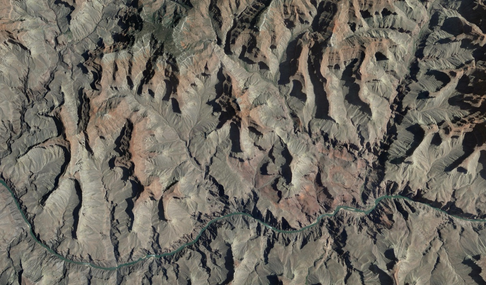

Army Intelligence Data Platform (AIDP)
Modernizing Army Intel's Data-Driven Future

The Army's Battle Command Intelligence System
Powered by Palantir, AIDP is an all-source intelligence solution that provides a critical edge to the warfighter in the era of peer and near-peer conflict.
AIDP is a globally deployed, cloud-based platform designed to unify and streamline intelligence operations across Army, Defense, and Intelligence Community systems.
Developed through close collaboration and continuous feedback from Army Military Intelligence Brigades, AIDP delivers a highly configured solution that replaces legacy stovepipes with a single, integrated environment—empowering battlefield leaders with real-time, actionable insights while also dramatically reducing infrastructure costs.
Impact
AIDP brings cutting-edge generative AI to classified Army environments for the first time, empowering analysts with advanced language models.
The platform unifies intelligence workflows, connecting data and systems across the Army, DoD, and Intelligence Community for a comprehensive operational picture.
AIDP democratizes innovation, equipping users at every technical level to develop and deploy custom solutions across Military Intelligence Brigades and US Army Forces Command.
AIDP is the backbone of Army intelligence training and experimentation, powering more than 20 major exercises worldwide each year.
Thousands of Army intelligence professionals rely on AIDP every month, supporting missions from Corps headquarters down to Battalion level across key commands.